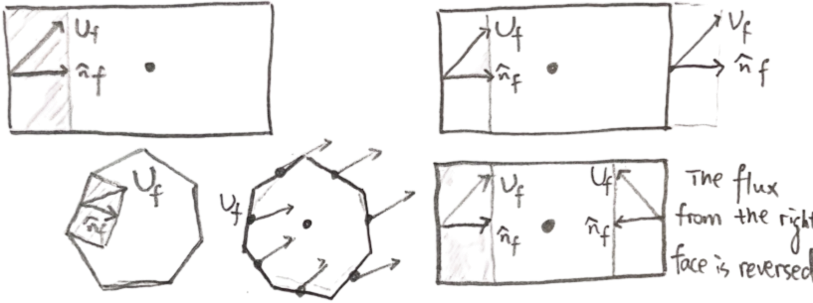

The next step is to consider the individual faces that make up the grid cells. We need to obtain the velocity component normal to the face. in three dimensions the velocity direction is not necessarily perpendicular to the face. Since velocity and the face normal are not aligned, the actual fluid displacement relevant to the Courant number is only the projection of the velocity in the face normal direction.

Therefore, we must take the velocity component in the face-normal direction $(U_f \cdot \hat{n}_f)$. Multiplying this component by the time step $\Delta t$ gives the fluid displacement in the face-normal direction. This definition method is also applicable to polygonal grids with multiple faces. In 3D grids, the Courant number is defined as $$ Co = \sum_{\text{Faces}} \overbrace{(U_f \cdot \hat{n}_f)}^{\text{velocity component normal to face } j}\, \Delta t \, \frac{\overbrace{A_j}^{\text{face area}}}{\underbrace{V_p}_{\text{cell volume}}} $$ Due to mass conservation, this formulation inherently satisfies the condition that the total flux across all cell faces is zero $$ \sum_{\text{Faces}} (U_f \cdot \hat{n}_f)\, A_f = 0 $$
| We also need to introduce a factor of \( \tfrac{1}{2} \); otherwise, the flux through the control volume would be counted twice | |
| For example, if the flux on the left face is 4 and on the right face is \(-4\), their sum is zero | \(-4 + 4 = 0 \quad (U_f \cdot \hat{n}_f)\) |
| However, if we take the absolute values, the sum becomes 8, which is greater than the actual physical flux | \(4 + 4 = 8 \quad |U_f \cdot \hat{n}_f|\) |
| Therefore, multiplying by \( \tfrac{1}{2} \) ensures that only one side of each pair of opposing faces is effectively considered | \(\tfrac{1}{2}(4 + 4) = 4 \quad \tfrac{1}{2} |U_f \cdot \hat{n}_f|\) |